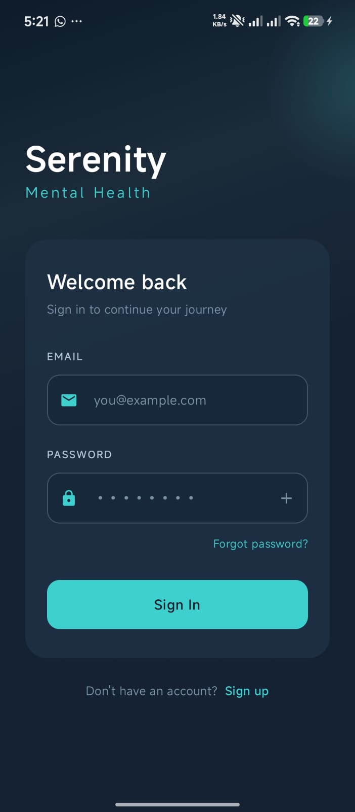
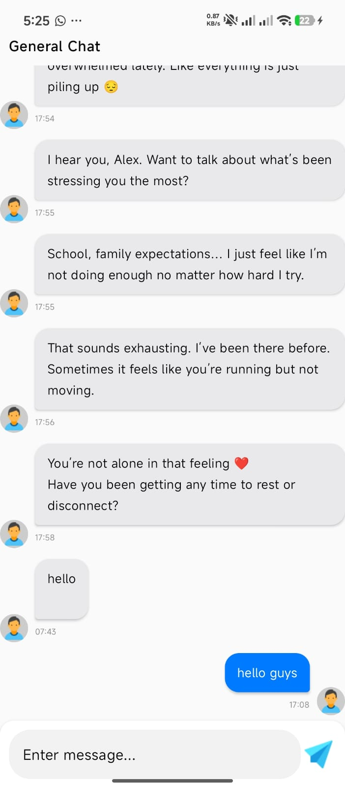
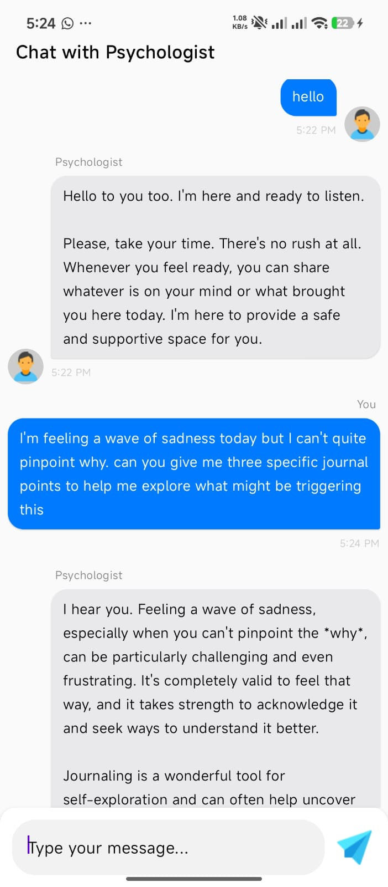
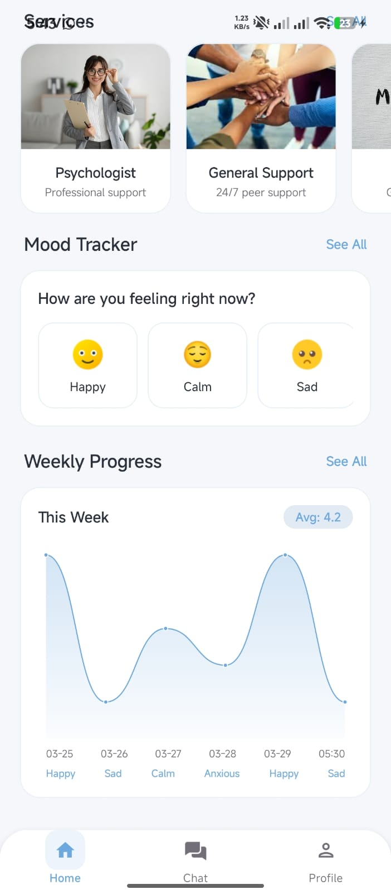
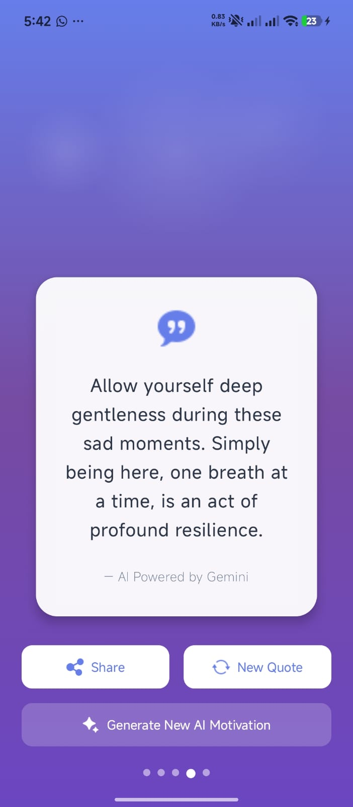
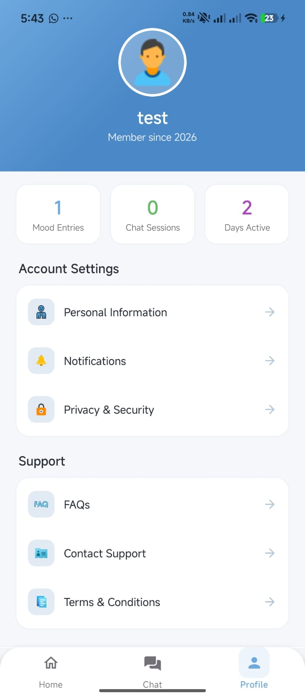

The Mental Health Support Chat Platform is a technological solution aimed childhood providing accessible, safe, and anonymous emotional support for individuals, especially youths, who may be struggling with mental health challenges. Traditional support systems, such as in-person therapy and counseling, are often expensive, limited in availability, and sometimes hindered by stigma. This project addresses these challenges by leveraging modern mobile technologies and artificial intelligence to create a supportive digital environment. The system is developed using Android Kotlin for the mobile application, integrated with backend and AI technologies to enable real-time communication and intelligent moderation. It allows users to engage in anonymous peer-to-peer chat, where individuals can share their thoughts and experiences freely without fear of judgment or identity exposure. AI-powered moderation is incorporated to monitor conversations, detect harmful or risky content, and promote a safe and supportive environment. Key features of the system include a peer-to-peer chat system that enables real-time anonymous communication among users, fostering connection and mutual support. The platform also includes an AI moderation system that analyzes conversations to identify potentially harmful content and provide appropriate interventions when necessary. A mood tracking feature allows users to log and monitor their emotional states over time, helping them gain better self-awareness. Additionally, a motivational text feature delivers encouraging and supportive messages to users, promoting positivity and emotional resilience. The system aims to reduce feelings of isolation, encourage open communication, and provide timely emotional support. By integrating AI-driven moderation with user-friendly mobile technology, the platform enhances safety, accessibility, and engagement. This project demonstrates how technology can be effectively utilized to support mental well-being, offering a scalable and practical solution for modern society.

The system includes secure user authentication with login and registration functionalities. Users can create accounts using their credentials and securely access the platform through Firebase Authentication. Once logged in, users can access and manage their profiles, which include basic personal information and activity history. The system ensures that user data is protected through secure session handling and access control mechanisms. This feature provides personalization and continuity within the platform.

The platform supports peer-to-peer chat functionality, allowing users to communicate with one another in real time. This feature enables users to share experiences, offer support, and build a sense of community within the platform. Messages are transmitted and stored using Firebase’s real-time capabilities, ensuring instant delivery and synchronization across devices. The chat interface is designed to be simple and familiar, similar to modern messaging applications, promoting ease of use and engagement.

A key feature of the system is the AI psychologist, powered by Gemini AI. This feature allows users to interact with an intelligent chatbot that provides immediate emotional support, guidance, and conversational responses.

tracking your daily moods

The platform includes a motivation texts interface, which provides users with encouraging and uplifting messages. These messages are designed to improve user mood, promote positivity, and support mental well-being. Users can access motivational content at any time, offering quick emotional support even outside of active conversations. This feature enhances user engagement and provides an additional layer of mental health support within the application.

The profile feature allows users to view and update their personal information within the application. Users can manage details such as their name, preferences, and account settings. This functionality ensures personalization of the user experience and allows users to maintain control over their information. It also supports continuity by linking user activity, such as chat history and interactions, to their profile.
Core Framework Overview